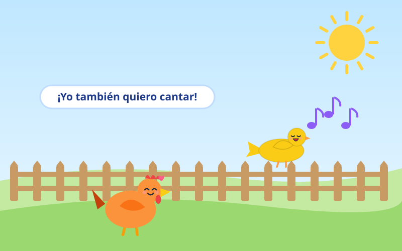
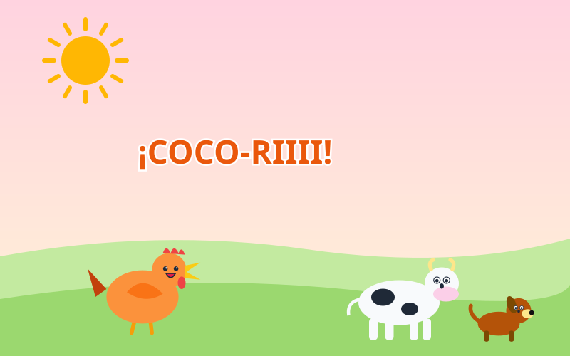
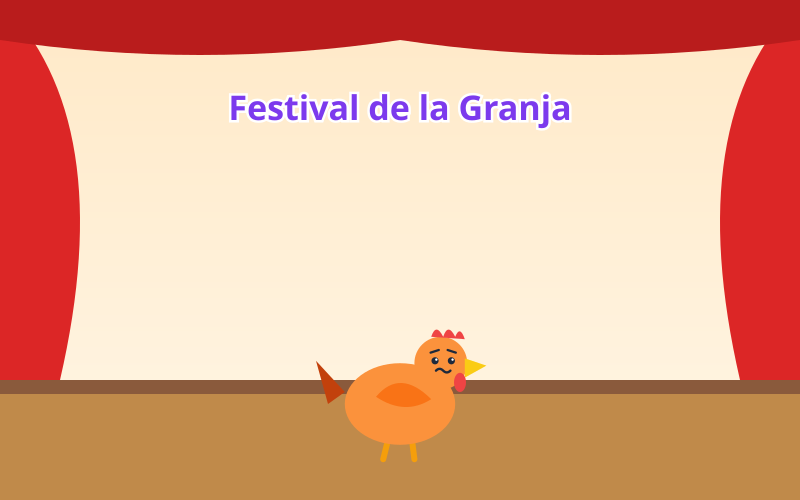
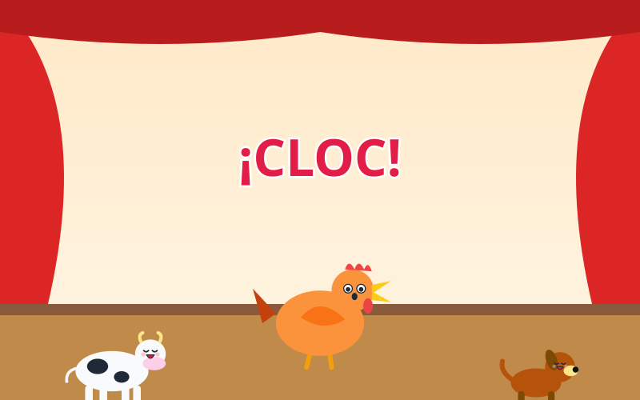
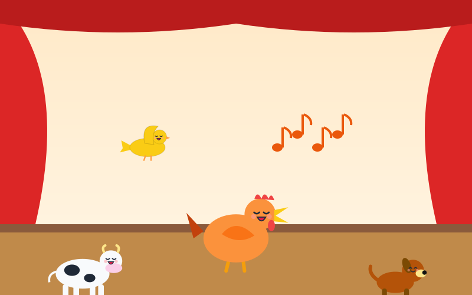
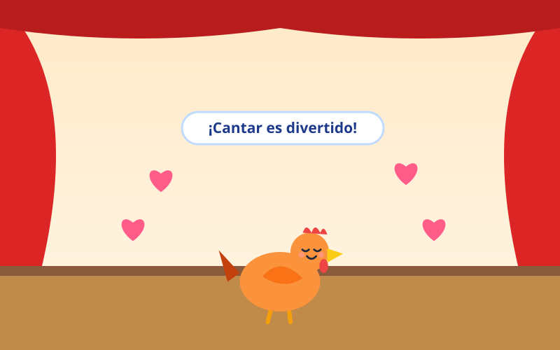

En la granja vivía Cata, una gallina muy alegre. Cada mañana escuchaba cantar al canario Pipo, y soñaba con cantar igual de bonito en el festival de la granja.
—¡Yo también quiero cantar! —decía Cata, con los ojos brillantes.

Cata practicó muy temprano, antes de que saliera el sol. ¡Su canto fue tan fuerte que despertó a toda la granja!
—¡COCO-RIIII! —cantó Cata.
—¿Qué fue eso? —preguntó la vaca, con los ojos muy abiertos.

Llegó el día del festival. Cata subió al escenario y vio a todos los animales mirándola. Las patitas le temblaban de nervios.
—Uy… estoy un poquito nerviosa —susurró.

Cata abrió el pico para cantar y… ¡se le escapó un «CLOC» enorme! Todos los animales se echaron a reír. Cata se sorprendió, ¡y también se rio!
—¡Jajaja! ¡Qué cloc tan gracioso! —dijo el perro.

En vez de ponerse triste, Cata inventó una canción con sus «cloc, cloc, coco-ró» y empezó a bailar. ¡Todos bailaron con ella!
—¡Cloc, cloc, coco-ró, a bailar con Cata yo! —cantaba feliz.

Al final, todos aplaudieron. Cata no cantó como el canario, pero hizo la canción más divertida del festival.
—¡Cantar es divertido cuando lo haces con alegría! —dijo Cata.
Reírse con alegría, también de uno mismo, hace todo más divertido. Lo importante no es hacerlo perfecto, ¡sino animarse a intentarlo!